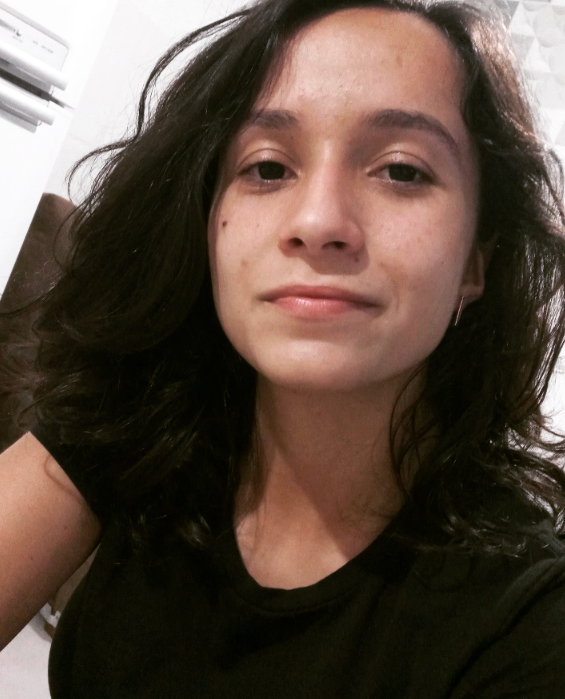

Centro de Excelência Votorantim

Emanuelly Wolski
Estagiária
É uma pessoa que adora o universo da tecnologia e todas as suas possibilidades;
Busca aprender constantemente e é muito resiliente;
Aprecia o compartilhamento de conhecimento e experiências;
🚀CoE
🏢 Curitiba-PR